阅读词表
| 词条 | 拼音 | 类型 | 说明 |
|---|---|---|---|
| 盘龙城 | pán lóng chéng | site_or_culture | 湖北武汉附近早商城址，文中作为商朝南方据点。 |
| 长江流域 | cháng jiāng liú yù | place | 长江水系覆盖的广大地区。 |
| 铜钺 | tóng yuè | bronze_item | 青铜钺，常象征军事权力。 |
| 土著 | tǔ zhù | concept | 本地原有居民或族群。 |
| 陶缸 | táo gāng | artifact | 大型陶制缸器，文中兼具储藏和炼铜功能。 |
| 人祭 | rén jì | concept | 以人作为祭品的祭祀行为。 |
| 祭祀坑 | jì sì kēng | concept | 用于祭祀或埋藏祭品的坑穴。 |
| 冶铸 | yě zhù | concept | 冶炼和铸造金属器物的工艺。 |
| 殉人 | xùn rén | concept | 陪葬或随葬的人。 |
| 李家嘴 | lǐ jiā zuǐ | site_or_culture | 盘龙城遗址中的墓葬地点。 |
| 冶铜 | yě tóng | concept | 从铜矿石中冶炼铜料的技术。 |
| 廊檐 | láng yán | concept | 建筑外围的廊和屋檐结构。 |
| 江汉 | jiāng hàn | place | 长江与汉水流域一带。 |
| 张煜珧 | zhāng yù yáo | person | 《夏商周祭祀遗存研究》作者；“煜”读 yù，意为光耀、照耀；“珧”读 yáo，指江珧等贝类及其有光泽的贝壳；旧文本误作“张煜跳”或“张煜珠”。 |
| 铜锭 | tóng dìng | artifact | 冶炼后铸成块状以便运输或再加工的铜料。 |
| 饕餮纹 | tāo tiè wén | artifact | 青铜器上常见的兽面纹饰。 |
| 玉戈 | yù gē | artifact | 玉制戈，多为礼仪性器物。 |
| 夯土城池 | hāng tǔ chéng chí | concept | 用夯土技术修筑的城墙和城邑。 |
| 人奠基 | rén diàn jī | concept | 建筑奠基时以人作为牺牲的行为。 |
| 人殉 | rén xùn | concept | 以人随葬或陪葬的行为。 |
| 铜鼓山 | tóng gǔ shān | site_or_culture | 湖南岳阳商代相关遗址。 |
| 铜岭 | tóng lǐng | site_or_culture | 江西瑞昌古代铜矿冶遗址。 |
| 屈家岭文化 | qū jiā lǐng wén huà | site_or_culture | 长江中游新石器时代文化。 |
| 石家河文化 | shí jiā hé wén huà | site_or_culture | 长江中游新石器时代晚期文化。 |
| 铜渣 | tóng zhā | artifact | 冶炼或铸造铜器后留下的残渣。 |
| 筒形器 | tǒng xíng qì | artifact | 筒状陶器，文中涉及祭祀埋藏。 |
| 绿松石 | lǜ sōng shí | artifact | 蓝绿色矿物，古代常作饰物。 |
| 卜骨 | bǔ gǔ | artifact | 用于占卜的兽骨。 |
| 铜钩刀 | tóng gōu dāo | bronze_item | 带钩状刃部的青铜砍刀。 |
| 铜镞 | tóng zú | bronze_item | 青铜箭头。 |
| 铜锛 | tóng bēn | bronze_item | 青铜锛，古代工具或兵器。 |
| 铜罍 | tóng léi | bronze_item | 青铜罍，古代盛酒器。 |
| 铜瓿 | tóng bù | bronze_item | 青铜瓿，古代盛酒器或容器。 |
| 版筑 | bǎn zhù | concept | 夹板填土后层层夯实的筑墙方法。 |
| 城壕 | chéng háo | concept | 城墙外的壕沟或护城河。 |
| 腰坑殉狗 | yāo kēng xùn gǒu | concept | 墓穴腰部小坑中埋狗的商人葬俗。 |
| 黄陂 | huáng pí | place | 今武汉市黄陂区，盘龙城遗址所在地。 |
| 铜绿山 | tóng lǜ shān | site_or_culture | 湖北大冶古代铜矿遗址。 |
| 二里冈文化 | èr lǐ gāng wén huà | site_or_culture | 早商时期中原考古文化。 |
| 新干大洋洲 | xīn gān dà yáng zhōu | site_or_culture | 江西商代晚期大型墓葬遗址。 |
| 三星堆 | sān xīng duī | site_or_culture | 四川广汉青铜时代遗址。 |
| 耜 | sì | rare_word | 古代翻土农具。 |
| 锸 | chā | rare_word | 古代掘土农具。 |
| 硬陶 | yìng táo | artifact | 高温烧成、质地坚硬的陶器。 |
| 原始瓷器 | yuán shǐ cí qì | artifact | 早期具有瓷器特征的高温陶瓷器。 |
| 长窑 | cháng yáo | artifact | 长条形陶窑，可一次烧制较多陶器。 |
| 稻秸泥 | dào jiē ní | artifact | 掺入稻秸的泥料，常用于墙体。 |
| 孔雀石 | kǒng què shí | artifact | 绿色含铜矿物，可作为铜矿石线索。 |
| 侈口斜腹陶缸 | chǐ kǒu xié fù táo gāng | artifact | 口部外侈、腹部倾斜的大型陶缸。 |
| 夔龙 | kuí lóng | artifact | 青铜纹饰中常见的龙形神兽。 |
| 铜爵 | tóng jué | bronze_item | 青铜酒器爵。 |
| 铜觚 | tóng gū | bronze_item | 青铜酒器觚。 |
| 朱砂 | zhū shā | artifact | 红色矿物颜料，常见于礼仪和墓葬。 |
| 犁铧 | lí huá | artifact | 犁的金属刃部。 |
| 四羊方尊 | sì yáng fāng zūn | bronze_item | 湖南出土的商代著名青铜方尊。 |
| 虎食人卣 | hǔ shí rén yǒu | bronze_item | 湖南出土的商代著名青铜卣。 |
| 枢纽 | shū niǔ | concept | 交通或联系的关键节点。 |
| 集散地 | jí sàn dì | concept | 物资集中和转运的地点。 |
| 夯土台基 | hāng tǔ tái jī | concept | 用夯土筑成的建筑台基。 |
| 木骨泥墙 | mù gǔ ní qiáng | concept | 以木材为骨架并涂泥形成的墙体。 |
| 二层台 | èr céng tái | concept | 墓室内用于放置随葬品或殉人的台阶状结构。 |
| 商裔 | shāng yì | concept | 商族后裔或商人族群成员。 |
| 埋祭 | mái jì | concept | 将祭品埋入地下的祭祀方式。 |
| 偃师商城 | yǎn shī shāng chéng | 项目词典 | 商代早期城址，位于二里头以东。 |
| 揭竿而起 | jiē gān ér qǐ | 项目词典 | 举起竹竿作旗帜起义，泛指反抗。 |
| 藁城台西 | gǎo chéng tái xī | 项目词典 | 河北藁城商代遗址。 | 河北石家庄附近商代遗址。 |
| 郑州商城 | zhèng zhōu shāng chéng | 项目词典 | 商代早期大型城址。 |
| 二里冈 | èr lǐ gāng | 项目词典 | 郑州一带早商文化的重要遗址和文化命名地。 |
| 北福地 | běi fú dì | 项目词典 | 河北易县史前遗址，文中涉及埋藏器物祭祀。 |
| 原始瓷 | yuán shǐ cí | 项目词典 | 早期高温釉陶或瓷器形态。 |
| 宫殿区 | gōng diàn qū | 项目词典 | 都邑中宫殿和王室活动集中的区域。 |
| 小双桥 | xiǎo shuāng qiáo | 项目词典 | 郑州西北中商时期重要遗址。 |
| 老牛坡 | lǎo niú pō | 项目词典 | 西安附近商代遗址，文中涉及商人据点和人祭。 | 陕西西安商代遗址。 |
| 铜礼器 | tóng lǐ qì | 项目词典 | 用于礼仪或祭祀的青铜器。 |
| 偃师 | yǎn shī | 项目词典 | 今河南洛阳附近地名，二里头遗址所在地。 |
| 冶炼 | yě liàn | 项目词典 | 用高温从矿石中提炼金属。 |
| 台西 | tái xī | 项目词典 | 河北藁城商代遗址，文中作为商朝北方军事聚落。 |
| 商族 | shāng zú | 项目词典 | 商王朝建立前后的族群共同体。 |
| 商王 | shāng wáng | 项目词典 | 商朝王。 |
| 地层 | dì céng | 项目词典 | 遗址中不同时期堆积形成的层次。 |
| 坑口 | kēng kǒu | 项目词典 | 坑穴在地表或开口处的形状和范围。 | 坑穴开口处的形状和范围。 |
| 坑壁 | kēng bì | 项目词典 | 坑穴侧壁。 |
| 坑底 | kēng dǐ | 项目词典 | 坑穴底部，常用于描述考古遗迹。 | 坑穴底部。 |
| 城邑 | chéng yì | 项目词典 | 古代有人群聚居、具有一定组织和防御功能的城镇聚落。 |
| 填土 | tián tǔ | 项目词典 | 填入坑穴或遗迹中的土层。 |
| 夯土 | hāng tǔ | 项目词典 | 把土层层夯实形成建筑基础或城墙的技术。 |
| 奠基 | diàn jī | 项目词典 | 建筑开始时的基础工程或相关仪式。 | 建筑开始时的基础仪式或基础施工。 |
| 巫术 | wū shù | 项目词典 | 古代借助神秘仪式影响现实的信仰行为。 | 借助神秘仪式影响现实的信仰行为。 |
| 族徽 | zú huī | 项目词典 | 族群标识，常见于商周青铜器铭文。 |
| 杀祭 | shā jì | 项目词典 | 以杀牲或杀人作为祭祀的仪式。 | 通过杀牲或杀人进行的祭祀。 | 通过杀人或杀牲举行的祭祀。 |
| 杂糅 | zá róu | 项目词典 | 混杂融合在一起。 |
| 棺椁 | guān guǒ | 项目词典 | 棺材及外棺。 |
| 殉葬 | xùn zàng | 项目词典 | 以人或物随葬。 |
| 殷商 | yīn shāng | 项目词典 | 商朝后期文化和政权。 | 商代后期以殷墟为中心的商王朝阶段。 |
| 殷墟 | yīn xū | 项目词典 | 晚商都邑遗址，甲骨卜辞的重要出土地。 | 商代晚期都城遗址。 |
| 殷都 | yīn dū | 项目词典 | 商朝后期都城区域，今安阳殷墟一带。 | 商朝后期都城区域。 | 晚商都城，通常指安阳殷墟。 |
| 沦丧 | lún sàng | 项目词典 | 丧失、沦陷。 |
| 灰坑 | huī kēng | 项目词典 | 考古遗迹中常见的垃圾坑或废弃坑。 | 遗址中含灰土、废弃物或祭祀遗存的坑穴。 |
| 献祭 | xiàn jì | 项目词典 | 把祭品奉献给神灵或祖先。 | 向神灵、祖先等奉献祭品。 |
| 王权 | wáng quán | 项目词典 | 王的政治统治权力。 |
| 疆域 | jiāng yù | 项目词典 | 国家或政权控制、影响的地域范围。 |
| 祭品 | jì pǐn | 项目词典 | 祭祀时献给神灵或祖先的物品。 |
| 穿孔 | chuān kǒng | 项目词典 | 贯穿形成孔洞，文中多指颅骨创口。 |
| 窖藏 | jiào cáng | 项目词典 | 埋藏于地下的储藏物或储藏方式。 | 将器物埋藏于地下的行为或遗迹。 |
| 纣王 | zhòu wáng | 项目词典 | 商朝末代王帝辛。 | 商末王，文中讨论其暴虐和人祭。 |
| 肢解 | zhī jiě | 项目词典 | 将肢体切割分解。 |
| 藁城 | gǎo chéng | 项目词典 | 今河北石家庄藁城区，台西遗址所在地。 |
| 辗转 | zhǎn zhuǎn | 项目词典 | 反复迁移或经过多处。 |
| 迁徙 | qiān xǐ | 项目词典 | 群体从一地迁移到另一地。 |
| 遗存 | yí cún | 项目词典 | 古代活动留下的遗物、遗迹或现象。 |
| 铜刀 | tóng dāo | 项目词典 | 青铜刀。 |
| 铜戈 | tóng gē | 项目词典 | 青铜戈，古代横刃长柄兵器。 | 青铜戈，商周常见兵器。 |
| 铜矛 | tóng máo | 项目词典 | 青铜矛，刺击兵器。 |
| 铜鼎 | tóng dǐng | 项目词典 | 青铜鼎，古代炊煮或礼仪重器。 | 青铜鼎，礼器或炊器。 |
| 铭文 | míng wén | 项目词典 | 铸刻在青铜器等器物上的文字。 | 器物上铸刻或刻写的文字。 |
| 陶窑 | táo yáo | 项目词典 | 烧制陶器的窑炉。 |
| 饕餮 | tāo tiè | 项目词典 | 古代传说中的贪食猛兽名，常用于青铜纹饰名称。 |
青铜器词表
| 器名 | 拼音 | 类型 | 说明 |
|---|---|---|---|
| 钺 | yuè | bronze_item | 大型斧形兵器或礼器。 |
| 戈 | gē | bronze_item | 古代横刃长柄兵器。 |
| 镞 | zú | bronze_item | 箭头。 |
| 罍 | léi | bronze_item | 大型盛酒器和礼器。 |
| 瓿 | bù | bronze_item | 小瓮形器，可盛酒或水。 |
| 鬲 | lì | bronze_item | 古代煮食炊器。 |
| 爵 | jué | bronze_item | 古代酒器，也引申为爵位。 |
| 觚 | gū | bronze_item | 古代饮酒器。 |
| 卣 | yǒu | bronze_item | 古代盛酒器，常有盖和提梁。 |
章节导读札记
| 主题 | 札记 | 操作 |
|---|---|---|
| 暂无章节导读札记 | ||
用户札记
| 类型 | 页 | 内容 |
|---|---|---|
| 暂无用户札记 | ||
原书阅读器页 159原书物理 PDF 页 157印刷页 145
第八章武德沦丧南土：盘龙城
早商王朝的扩张能力往往出人意料，向南方，最遥远的城市是盘龙城，位于今武汉市郊黄陂区一片湖水环抱的半岛上。
在二里头-夏朝时期，盘龙城已经是一座小有规模的本地聚落，居民几乎完全使用石器，只有极少的小件铜器。制陶业发达，能生产当时独步天下的硬陶和原始瓷器——和常用的陶器相比，它们坚硬光润，烧制温度更高，陶土配比和工艺也更复杂。
那时这里已经有烧制大型陶器的“长窑”，刷新了人们对夏商时代的认知：地下窑穴长达50米，中间有几个窑门，一次可以烧制大量产品。显然，这是一种专业化的生产，而且本地也有充足的森林充当燃料，河道可以连通长江和汉江，便于陶器产品通过水路销往外地。[[fn:1]]
约3500年前（盘龙城文化四期），一支商人远征队出现在盘龙城繁忙的陶器码头。他们装备着锋利的青铜兵器，如矛、戈、刀、钺、弓矢等，而满身烟尘的土著却只能任由外来者安营扎寨，发号施令。南中国长江流域最早的冶铜基地和铜交易中心，就这样出现了。
此时，商朝已经开国数十年，但统治中心在郑州商城，长江流域的居民很少有人听说过这个北方王朝的声威，更不知道这些人为何来到这遥远的南土世界。
长江中游有高品位铜矿，还有生产青铜必需的锡矿和铅矿，而这正是商人远征队一直寻找的东西。他们跋涉了无数河流和山地，可能花了不止一代人的时间才来到此地。虽然盘龙城本身没有矿藏，但它位居汉江和长江交汇之地，是长江中游通往北方的枢纽，也是各种冶铜原材料最方便的集散地。
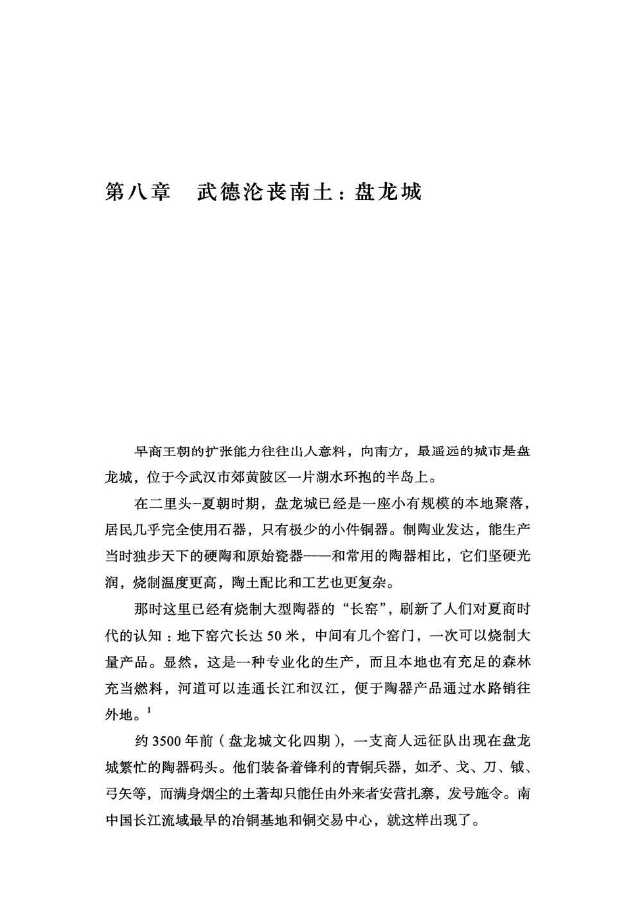
原书阅读器页 160原书物理 PDF 页 158印刷页 146
当然，长江和汉水的支流众多，交通便利并非盘龙城独享的优势，商人之所以选择在这个小小半岛立足，还因这里一直有大规模的制陶产业。制陶和冶铸有相通之处，便于商人利用当地居民发展冶铜产业。此外，盘龙城此前的陶器外销，也使本地人比较熟悉长江商路，对商人来说，这些经验很有价值。
而江汉地区不仅有悠久的新石器文化，有过大型水利设施和繁荣的稻作城邑，还有民众参与度很高的乡土宗教，所以商人在这里设置据点，长期经营，自然和当地居民之间的相互影响越来越深。只不过，双方都难以预料它的结果：一百多年后，如日中天的早商王朝会因南土的影响而崩溃。
长江边的青铜产业基地
立足盘龙城后，商人逐渐向周边地区扩张，待冶铜产业初具规模，便开始建设夯土城池和宫室。此时，属于盘龙城文化第四期末段。
盘龙城的内城不大，东西宽260米，南北长290米，面积7.54万平方米，尚不如夏都二里头的宫殿区。城的四面各有一座城门，城墙采用版筑法，宽和高都在10米左右。[[fn:2]] 长江流域原本没有版筑工艺，这应该是商人带来的。此外，内城也没有发现制陶和炼铜的遗迹，这些设施都分布在城外。
盘龙城遗址平面图（图）
城墙外是一圈城壕（护城河），有些残留的木结构码头遗迹，发掘者推测，城壕水系联通长江，应该有航运功能。2001年，发掘者又发现了一处断续的外城遗迹：南面临水，围起一块半月形陆地。这种外城接水、环抱内城的构造和郑州商城非常相似，堪称郑州商城的四十倍缩小模型。
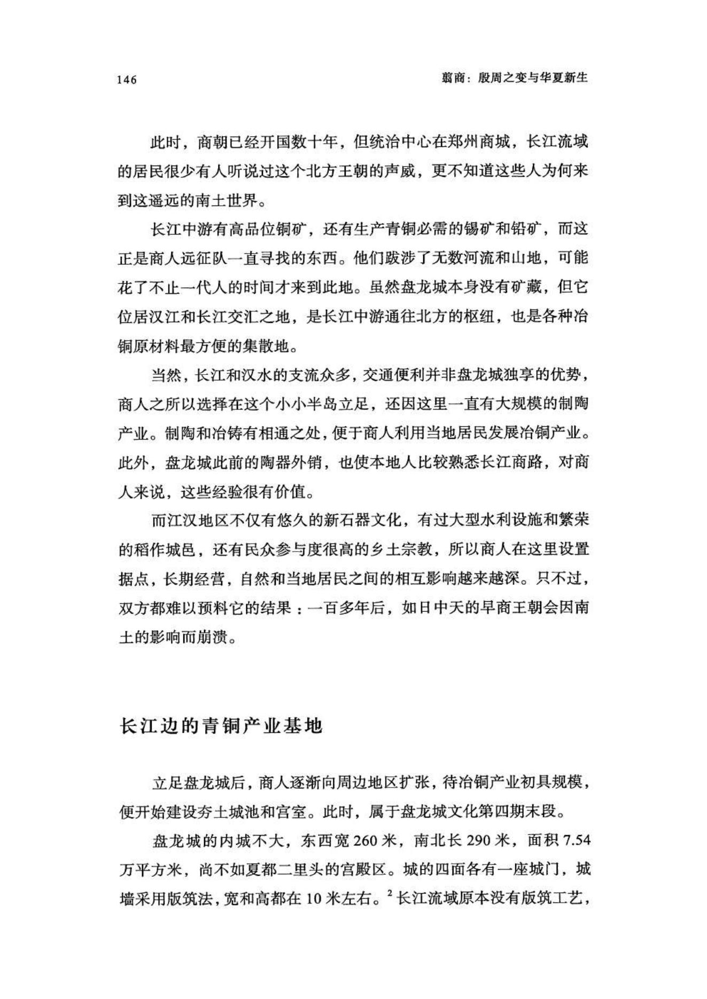
原书阅读器页 161原书物理 PDF 页 159印刷页 147
内城的“宫殿区”有两座大型建筑建在夯土台基上，长40余米，宽6—7米。墙体是新石器时代长江流域常见的木骨泥墙结构：用原木做骨架，涂抹很厚的稻秸泥做墙体，并用白灰粉刷；屋墙外有密集的木柱，支撑起巨大的“四面坡”屋顶和廊檐；屋檐下的地上铺一圈碎陶片“散水”，防止雨水冲刷地面；有陶制的下水管道把雨水排出院落。南侧的建筑F2是没有隔间的大厅，可能是处理公务的会议室；北侧的F1有四间正屋，是主人家庭的起居场所。[[fn:3]]
商人到来后，原本生产陶器的盘龙城地区立刻布满了青铜元素。考古工作者在墓葬和灰坑中频频发现各种青铜制品，有酒器、容器、炊器、兵器……内城外数公里内的聚落，如楼子湾和杨家嘴，都有大规模炼铜及铸造场，木炭灰的堆积范围达数十米。
杨家嘴遗址五期，有一条30多米长的灰烬沟，内部有陶坦堤和陶缸，还有残铜片、铜渣和孔雀石（铜矿石）；楼子湾遗址五期，有一处10平方米左右的圆坑，里面有石块和铜炼渣，还有沾着铜渣的陶缸碎片，发掘者推测，这座圆坑是炼铜的工棚；杨家湾遗址六期，有一条堆满灰烬的浅沟，长30米，分布着三组共十件陶缸，均被三四块石头支起，像是架起的锅灶。
发掘报告记录的这些炭灰冶炼痕迹，都是露天工作场，还没有发现二里头遗址那种铸铜“厂房”建筑。
盘龙城的土著居民擅长制作一种大陶缸，高度在0.5—1米之间，
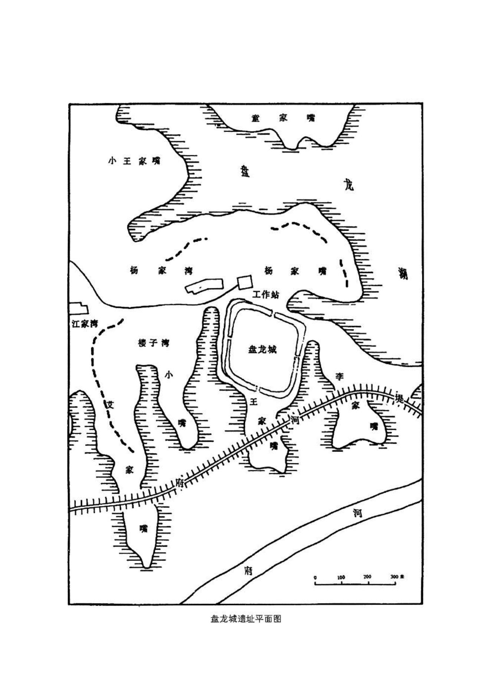
原书阅读器页 162原书物理 PDF 页 160印刷页 148
底部呈圆弧形，外表有凸起的棱块，发掘者称之为“侈口斜腹陶缸”。它可以追溯到五千多年前的湖北天门石家河古城，那里的居民经常制作大型陶筒形器和陶缸，然后成组埋入祭祀场。这种缸兼有祭祀功能和实用性，可以盛粮食或水，可以炊煮，而在商人到来、冶铜产业兴起之后，大陶缸又有了炼铜的功能。
盘龙城出土陶缸以及考古人用陶缸做熔铜浇铸实验（图）
从盘龙城的冶铸现场来看，应当是先从外地运来各种矿石，在城外冶炼成铜锭，或者继续浇铸成铜器，然后销往中原的商朝腹地。盘龙城人随葬的各种铜器和同期中原的造型与纹饰基本相同，但也有少许本地特点：铜器上没有文字，也没有族徽等符号。
那么，盘龙城的铜矿来自哪里？
湖南岳阳铜鼓山遗址有和盘龙城造型类似的系列陶器，但没有古代采矿和冶炼的遗存，不过从地名推测，这里应当有过铜矿；[[fn:4]] 江西瑞昌的铜岭遗址有古代矿井、冶炼炉和各种设备，最早的开采时间为
商代前中期，和盘龙城基本同时，但陶器形制和盘龙城联系不大；[[fn:5]] 距离盘龙城更近的，是湖北大冶的铜绿山遗址，虽然目前只发现了西周的采矿遗迹，但很可能盘龙城时期已经有开采。
从这些零散的材料看，盘龙城的铜矿基本来自当时水路交通相对发达的鄂、湘、赣三省范围。这些矿产未必由盘龙城人直接开采，他们很可能是通过贸易获得矿石的，比如，用铸造好的铜器和当地人交换。寻找铜矿产地并不是太困难，铜矿表层有精致的绿松石，经常被制作成饰物流传，只要探听到这些绿松石饰物的产地，很容易顺藤摸瓜找到铜矿带。
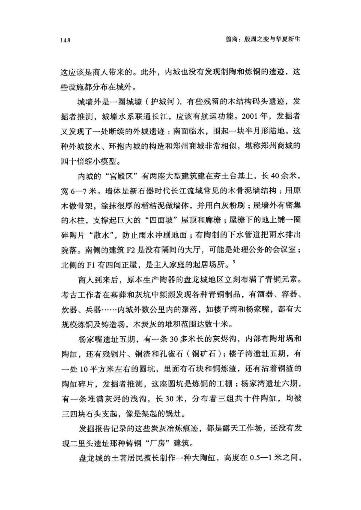
原书阅读器页 163原书物理 PDF 页 161印刷页 149
至于盘龙城和商王朝之间到底是什么关系，学者们有不同的判断。有人认为，它由商王朝直接管辖。这意味着本地生产的部分铜锭和铜器要无偿进贡给商王。也有人认为，它是从商王朝裂殖出去，但政治上自主的方国。毕竟，它和黄河边的商朝腹地距离上千里，途中要穿过山地和大小河流，还有无数土著部族领地，在当时的交通条件下，王朝难以直接统治这么遥远的地区。还有人认为，它是由长江流域土著族群建立的原生态国家，和远在北方的商朝没有任何关系。[[fn:6]] 但不可忽视的是，这里出土的铜器和陶器与郑州商城类似，属于二里冈文化的分支；出土的卜骨上有钻孔，也和商朝腹地的占卜方式相同。当然，器物造型未必能完全代表政治关系，还要看其他证据：一，盘龙城人的墓葬中有一部分是用狗殉葬的，而这是中原商人特有的习俗，先在墓穴腰部挖一个土坑，埋下一条狗，然后安放棺木。在考古学上，这被称为“腰坑殉狗”。此外，在墓室和墓穴填土内也会埋入狗。二，有些墓主头朝北方。商朝远方城邑的墓葬，墓主往往头朝商都方向，比如，石家庄台西遗址（头朝南方）和陕西老牛坡遗址（头朝东北方）都指向商朝后期的殷都。
关于盘龙城统治者的族属特征，墓葬提供了很多信息。在已发掘墓葬中，李家嘴PLZM2的规格最高，和城墙建成时间接近，随葬了较多青铜器，还有三名殉人，其中一名是儿童。这是一座非常典型的商式墓葬，有腰坑殉狗，二层台放置随葬品和殉人，甚至棺椁木板上雕刻了经典的商式饕餮纹。
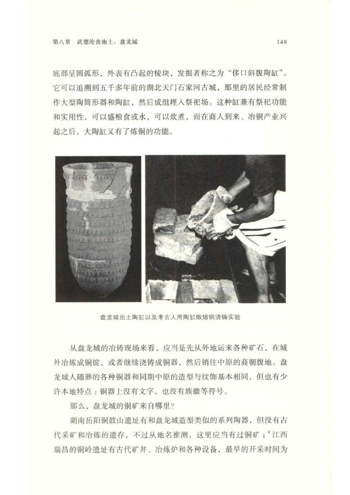
原书阅读器页 164原书物理 PDF 页 162印刷页 150
李家嘴PLZM2椁板的夔龙饕餮纹在泥土上留下的印痕[[fn:7]]（图）
和盘龙城同期的郑州、偃师商城均尚未发现高级的墓葬，很难和盘龙城进行对比，但殷墟时代的商人贵族墓葬很明显和盘龙城有相同的渊源，所以盘龙城的统治者肯定属于商王朝上层。
李家嘴PLZM2随葬了50件铜器，主要是成套的各类铜礼器；兵器则有铜钺两件，铜矛和铜戈各一件，长30厘米左右的铜刀四把；玉器，除了装饰品，还有玉戈四件。这位墓主应该来自负责兴建城池和宫殿的统治家族。
此外，盘龙城还有些中小型商式墓葬。这些墓主应该属于同一商人部族，整体迁徙到盘龙城，并在此建立了一个繁荣的远方侯国。
盘龙城商人墓中随葬兵器的种类和数量都不少，除了常见的戈和镞，还发现了两把“铜钩刀”，刃长约40厘米，刀背有几个穿孔，方便固定在长木柄上。这是较早的一种砍刀，到殷墟时期，刀身进化得更宽，被称为“卷头大刀”。
盘龙城出土的部分铜兵器，上为铜戈，中为铜镞，下为铜钩刀，三者比例不同。（图）
青铜“马面”，可能是皮质头盔上的装饰。盘龙城没有发现马车和马骨，当时的商人还没有养马和马车技术。（图）
不嗜血的商人
虽然有种种证据证实盘龙城的商文化特征，但它和商王朝的差异之处也不容忽视，尤其是，这里没有杀人祭祀行为：城内和城外都没有发现人祭坑，城墙和宫殿区也没有发现“人奠基”。在中原地区的商代遗址中，人祭、人奠基、制骨作坊批量加工人骨、任意杀人行为和灰坑中的遗弃尸骨都很常见；但在盘龙城，目前还没有发现这些迹象。
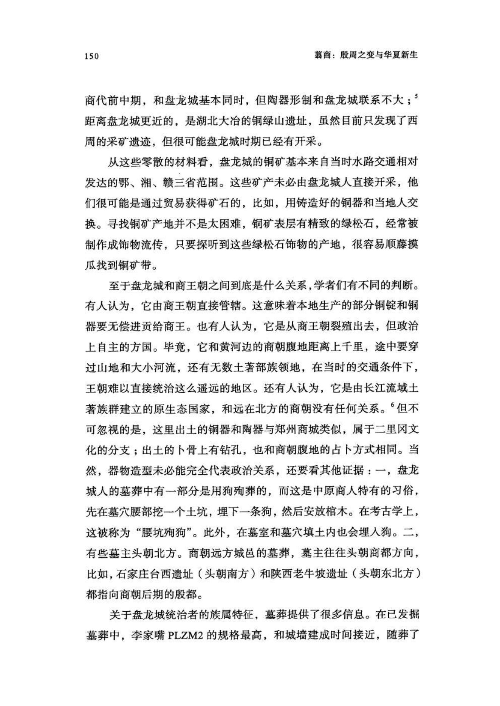
原书阅读器页 165原书物理 PDF 页 163印刷页 151
盘龙城唯一保留的人祭特征是使用殉人，比如，前述李家嘴PLZM2墓中有三名殉人，稍后发掘的杨家嘴M14和杨家湾M13（两座中型墓葬）各有一名殉人。[[fn:8]] 目前，盘龙城已经发掘了30多座墓葬，殉人比例并不算低。
〔按语：人祭，人殉。商纣王废除人祭，周仍保留人殉。（待核）〕
盘龙城的统治者是商人，也是青铜冶铸行业的经营者，这两种身份和人祭宗教有着密切联系，但为何和中原相比，他们变得更和平了（虽然还有人殉）？
长江流域是稻作农业，受水土条件制约较大，稻作聚落往往在小流域内密集分布，而不同的小流域之间往往距离较远，所以稻作聚落呈“大分散，小聚居”模式；而华北主要是旱作农业，受地形影响小，聚落分布不太集中。
这种人口分布对商人统治者有直接影响。在繁荣的盘龙城小流域中，这些外来统治者只是人口中的极少数，必须顾及本地土著的感受，否则，一旦周边土著同时揭竿而起，他们根本无法抵抗——这里离商王朝已经太遥远，难以获得王朝的军事支持。由此，他们就不可能像北方的边防城邑的统治者那样，对周边居民残暴而恣意（如后面即将登场的藁城台西和西安老牛坡），而只能放弃过于暴力的宗教祭祀和统治方式，尽量避免激起土著族群的反抗。
从盘龙城土著的立场看，他们之所以接受这些外来者的统治，除了青铜兵器的威慑力，更重要的应该还是青铜产业带来的利益。外来的商人有青铜冶铸技术，但他们的人数并不足以在新环境中搭建起整个产业，所以从一开始就需要与当地人合作，建立从找矿、采购、运输矿石、冶炼、铸造直到外销的整条产业链。这意味着本地人也能从新产业中获利，商人和土著可以合作共赢。盘龙城古国应该一直建立在这种产业合作的基础上。
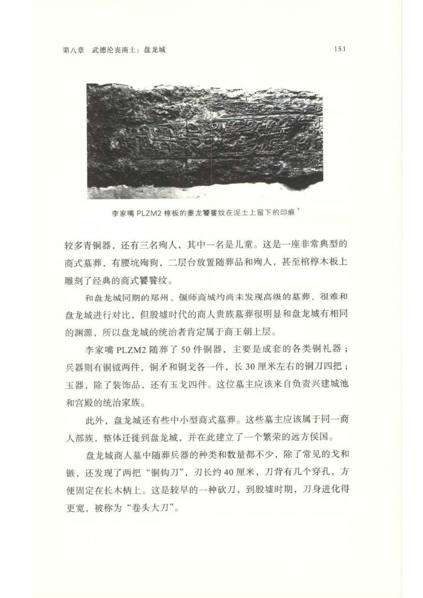
原书阅读器页 166原书物理 PDF 页 164印刷页 152
在当时族邦林立的大环境下，盘龙城人不得不重视武备，从夯土城池到频频出土的各种青铜兵器都说明了这一点；但与此同时，青铜产业的运营又需要有一个和平环境，不管是外来商裔与土著居民的合作，还是和周边族群的商业交换（购入铜、锡、铅矿石，出售铜锭和铜器），盘龙城人也基本做到了这一点——盘龙城内外没有发现乱葬尸坑以及带伤或被肢解的零碎人骨，就是明显的证据。
可以这么说，盘龙城的商人不仅主动放弃了中原传统的人祭和人奠基等宗教仪式，还接受了本地土著族群的宗教理念——一种比中原更和平的文化。
南土和平祭祀
从5000多年前的屈家岭文化到4000多年前的石家河文化，盘龙城所处的江汉地区出现过很多防洪用途的“古城”和稻作水利设施，尤以天门石家河古城规模最大。然而，江汉地区却一直没有发生阶级分化，也没有出现早期国家与文明。其中的一个重要原因，应该就是当地的宗教形态：祭祀方式以摆放和掩埋器物为主，很少有杀人和杀牲畜的行为。
比如，5000多年前的屈家岭文化以埋葬陶筒形器和陶缸为主，4000多年前的石家河文化则制作大量泥塑人偶、动物和杯子等，然后烧制成粗陶并掩埋。这样一种和平的宗教理念，不仅有助于维持族群间的合作关系，在一定程度上代替了早期国家的暴力统治功能，而且还能消耗社会剩余产品，避免了因财富的过度集中而出现职业统治阶层。[[fn:9]]
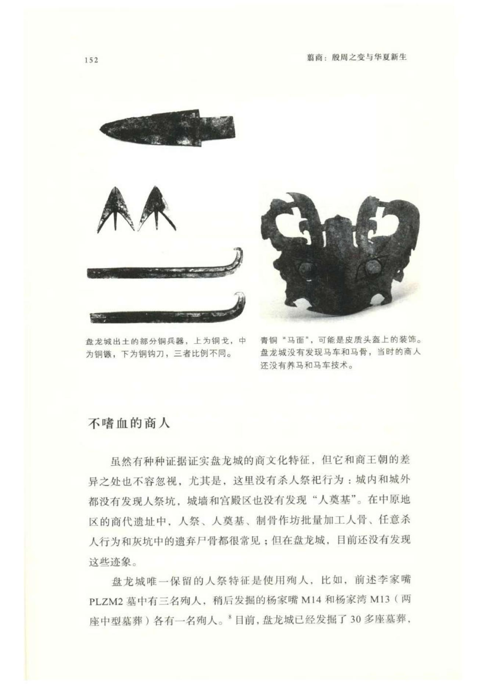
原书阅读器页 167原书物理 PDF 页 165印刷页 153
当商人到来之后，国家权力虽已不可避免，比如，盘龙城的城池和宫室显然代表了财富和权力的集中，但本地民间宗教仍起着融汇和同化的作用。发掘显示，盘龙城商人经常举行一种不杀人的祭祀：在土坑或灰烬里摆放陶器、铜器或玉器，然后掩埋。
盘龙城外的王家嘴有两座祭祀坑H6和H7，属于盘龙城文化五期（此时，城墙和宫殿刚建成不久）。两者相距1.5米，呈南北向并列，紧邻一座数十年前建成的大型长陶窑（Y3），附近还有陶窑经营者的房子。当时，主祭者应该是先挖了一条数米长的浅坑，在坑中堆放柴草，点火敬神，等灰烬冷却后，再在坑底挖一个深且陡的小坑，然后往里面放置祭祀器物，最后则是用混合灰烬的泥土掩埋。
H6出土铜锛两件、铜刀一件、铜钺一件、铜镞十件，都是武器和工具，没有酒器和食器；陶器则有鬲、罍、盆、壶、罐、大口尊和瓮等。
H7出土有铜爵、铜觚、铜罍、铜戈、铜锛和铜刀，还有玉戈、玉柄形器以及石斧，但没有陶器。这些物品呈环形放置，沿坑壁还有三块石块。尤其值得注意的是，铜罍内藏有一块使用过的卜骨，上面有钻好的圆窝和烧烫裂纹，很可能是用来占算这次祭祀的，所以被一起埋入了祭祀坑。
甲骨占卜是典型的中原-早商文化，在长江流域很少见，所以，和铸铜技术一样，应该也是商人带来的。不仅如此，来自北方的甲骨占卜还被南方的埋物祭祀仪式所吸收，这显然反映了南北、主客两种文化间的融合。
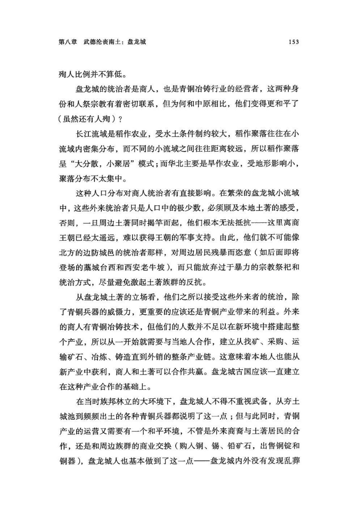
原书阅读器页 168原书物理 PDF 页 166印刷页 154
此外，考古工作者还在盘龙城外的杨家湾发现了另一座祭祀坑，编号H6（为与王家嘴H6区别，下文称为“杨家湾H6”），属于盘龙城文化七期（商文化晚期），大概在城池和宫殿体系建成后一百余年。
杨家湾H6位于三座房子和一大片灰烬地带之间，灰烬可能是冶铸铜器形成的，呈不规则方形，边长2米多，深64厘米，坑内填的是混合灰烬的黑灰土，坑底铺朱砂，有兽骨，应当是作为祭品的肉食。
埋藏的器物多达58件，主要是铜制酒器和食器（礼器）；其次是陶器、玉器和石器；坑口位置集中摆放的是铜兵器，有钺一件、矛一件、戈二件、镞15件以及玉戈一件。其中，铜钺造型夸张，刃部呈半圆形，两刃角钩状上翘，钺身中部有一边缘较厚的大圆孔。这种铜钺在中原地区很少见，属于盘龙城最晚期发展出来的独特形制：美学功能增加，但实用性降低，难以深入地斩劈。杨家湾七期墓葬M11中，也有一件与此类似。
在这之前，盘龙城人还没有这种不实用的铜钺，比如，城池兴建阶段（四期）的李家嘴M2随葬的铜钺还是实用的商式特征。在商人文化中，钺是军事权的象征，也是杀俘献祭的重要工具。盘龙城人到晚期还在生产铜钺，说明他们的商文化血脉仍在延续，部族军事体系也一直存在。但是，晚期铜钺却变得不实用和卡通化，又说明他们已经很少杀戮人或牲畜。而把铜钺和各种兵器作为祭品埋入祭祀坑，则几乎是对商人杀祭宗教的一种讽刺了。
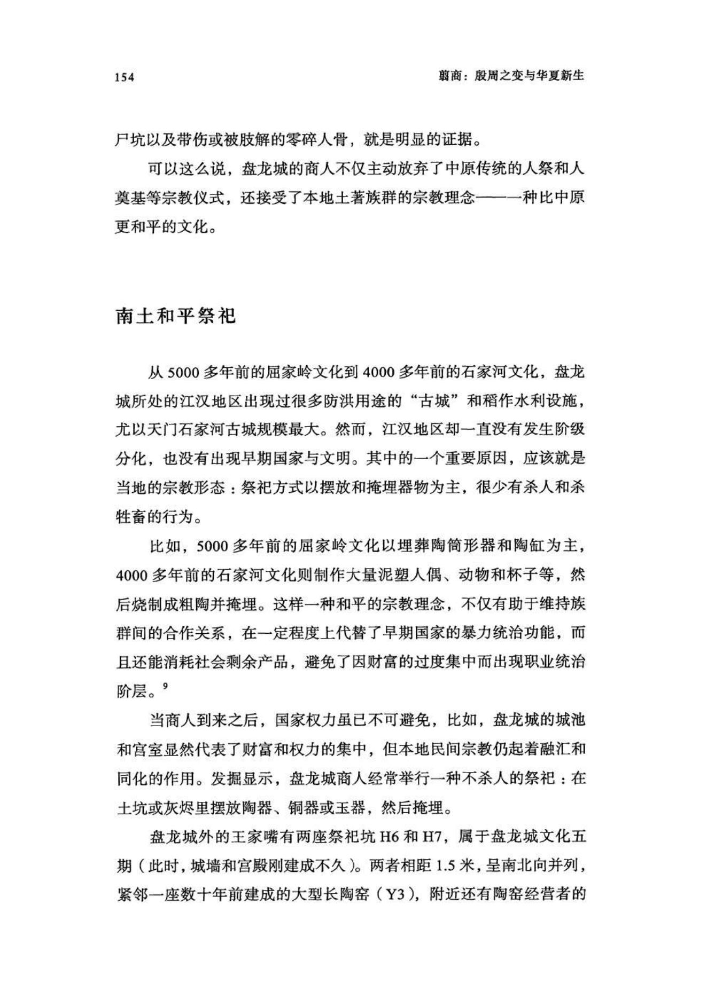
原书阅读器页 169原书物理 PDF 页 167印刷页 155
这三座祭祀坑是发掘报告确认的。此外，王家嘴遗址（地层不详）还发现了十多座密集的小坑，每座0.5平方米左右，里面埋有木炭黑灰、完整的陶缸或碎片以及很多盛放食物和酒的陶器。这些坑无法用于冶铸，所以也可能是祭祀场所。
杨家湾M11铜钺、杨家湾H6铜钺与盘龙城七期的卡通化铜钺（比例尺10厘米）（图）
〔按语：古人的智力与现代人持平。〕
目前，盘龙城城外一共发掘四座埋藏物品的祭祀坑（场），数量似乎不大，但考虑城内和城外发掘的墓葬总量也不过30多座，这样算下来，平均不到十位死者就会有一座祭祀坑（场），而且每座祭祀坑内还会有多组器物，由此，盘龙城人的埋祭仪式之多和物资消耗之大就可见一斑了。
如前文所述，河北易县北福地遗址（距今8000年前）有将大量石器和陶器、玉器摆放在祭祀场并加以掩埋的现象，而考虑到北福地是石器制作工场，盘龙城是铜器冶炼场，它们之间很可能有类似的宗教逻辑：石器和铜矿石原料来自大地，将制成品埋入地下，是表达对大地的感恩；这也是一种“播种巫术”，把物品想象成种子，种子会在土壤中发芽成长，结出更多果实。
盘龙城距离郑州商城很遥远，但两地之间仍有很多联系。比如，盘龙城发达的制陶工艺已输入郑州商城；约3400年前，郑州商城还出现了王室级别的埋葬青铜器的祭祀活动，而这很可能是盘龙城商人对“母邦”的影响，致使商王朝一度曾考虑放弃人祭宗教。
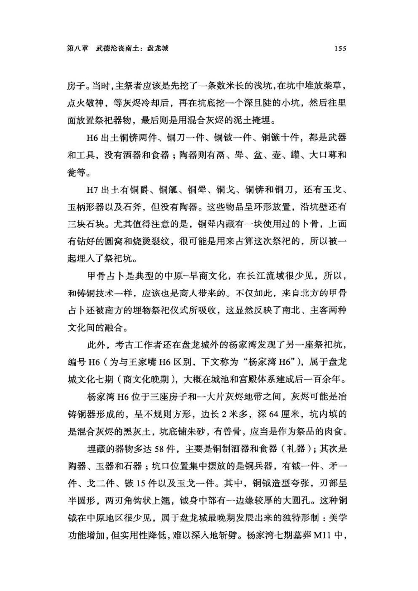
原书阅读器页 170原书物理 PDF 页 168印刷页 156
但商朝腹地旋即发生大动荡，郑州商城和偃师商城被毁弃，继起的小双桥朝廷再次回归人祭宗教。这意味着商王朝内战的胜出者是盘龙城的对立面——盘龙城和王朝腹地的联系就此彻底断绝。
这之后，盘龙城（商人）又维持了数十年时间，而且和长江流域土著族群的融合程度越来越高。最终，盘龙城消失了，青铜技术却在南土扩散开来。
青铜技术扩散江南
很难追索盘龙城消失的原因，也许是周边部族攻灭了它，也许是盘龙城人迁徙到了别处。长江流域一直很难出现权力集中的政权，哪怕北来的青铜技术和文字书写技术（虽然尚缺乏直接证据）输入后，也没有太明显的改观。
而在北方，殷墟时期的商朝实现了稳定和复兴，对铜料的需求量越来越大，这也拉动了长江中游的铜矿开采和冶炼行业。由此，南土的铜、锡原料便一直可以输往中原，同时，有些商朝高端青铜器也被贩运到长江流域。当然，虽然南北之间有贸易和技术上的交流，但殷商王朝此后再也没有尝试把统治触角伸向这里。
长江流域的江西、湖南和四川都大量出土过商代后期（殷墟时期）的青铜器，有些出自窖藏，有些是随葬品，商代风格和本地元素杂糅，本地化特征普遍高于盘龙城：
一，江西新干大洋洲镇发掘的一座墓葬，随葬铜器多达480多件，比盘龙城的高等级墓葬要高十倍，其中，铜鼎有31件，铜戈28件，铜矛35件；此外，还有大量青铜农具和工具，如犁铧、耒、耜、锸和镰刀等。在中原地区，青铜农具从未普及，但大洋洲却因靠近铜产地，铜价低廉，甚至奢侈到用青铜制作农具。到晚商，江西的吴城还出现了夯土城池，很可能有盘龙城人辗转融入当地，但该城址缺少高等级宫殿和墓葬的信息，很难判断它作为早期国家的发达程度。
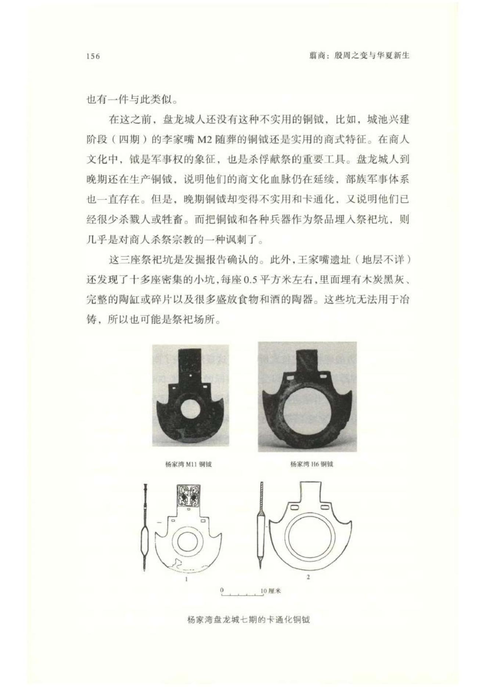
原书阅读器页 171原书物理 PDF 页 169印刷页 157
二，湖南零散出土过多件商代晚期青铜器，大都做工精良，造型奇异，著名的有四羊方尊和虎食人卣。尤其是宁乡县张家坳出土的一件铜鼎，口内有“己丙”二字铭文，属于典型商族人的特征（天干铭文），说明殷商和湖南地区有密切联系。此外，该县还出土有人面方鼎以及兽面铜瓿，铜瓿内装着224件小铜斧。目前，在湖南发现的晚商铜器多是零星出土，应当是出于祭祀目的而埋的。[[fn:10]]
三，四川广汉的三星堆祭祀坑也有出土密集的青铜器，以及本地风格的青铜面具、神树和神人像，时代属于殷墟前期。但没有发现杀人祭祀现象，以及和王权有关的大型工程。这些都属于长江流域的宗教-社会传统。
盘龙城距离黄河边的商都郑州足有500公里，是早商王朝宏大扩张运动的产物。在3500年前，世界上还没有哪个政权能够达到这种规模的疆域。在今天，500公里不算太遥远，但要注意，盘龙城和郑州分属长江和黄河流域，并没有水路航运的便利，只有分水岭的阻隔。下一次再把这两地同时纳入统治范围，则要等到战国晚期的秦国，而那已经是一千余年之后了。
过度扩张给早商带来了荣耀，但更有隐患和教训。后来的商王逐渐开始考虑如何让商人免受异族文化的侵蚀，避免早商王朝的覆辙，而这奠定了晚商（殷商）时代的基调。
注释
1 湖北省文物考古研究所：《盘龙城》，文物出版社，2001年。盘龙城遗址分
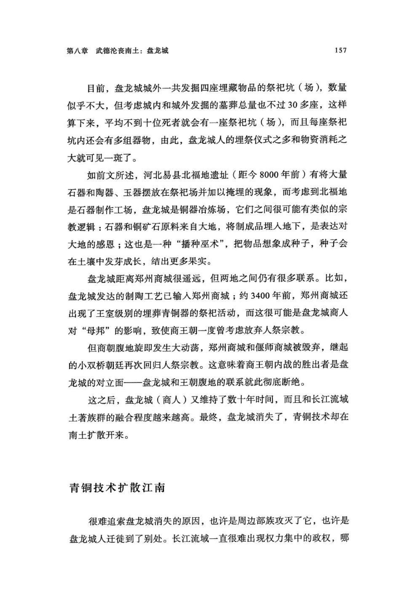
原书阅读器页 172原书物理 PDF 页 170印刷页 158
为七期，一期到三期基本相当于二里头文化-夏朝时期，四期中段出现商人拓殖现象，七期是商人拓殖时代的尾声。有关盘龙城考古的基本信息及图片，未注明出处的皆出自该书，不再详注。
2 由于长期的自然和人工破坏，现存的盘龙城城墙只有两三米高。另外，发掘报告记载，有些地段墙基宽约20米，由此被有些文章转引为城墙宽20米，这可能是不确切的，墙基和城墙的宽度可以有较大差距。
3 在F1北侧还有一座建筑的遗迹，被发掘者定名为F3，但建筑史学者杨鸿勋认为，F3遗迹不是房屋建筑，而是带廊檐的围墙，并由此推断F1、F2两座建筑都是被廊檐围墙包围的。复原图就是按照廊檐围墙院落绘制，但周围一圈廊檐是否存在，还缺乏进一步证据。杨鸿勋：《盘龙城商方国宫殿建筑复原研究》，湖北省文物考古研究所《盘龙城》。
4 胥卫华：《湖南岳阳市铜鼓山遗址出土商代青铜器》，《考古》2006年第7期。
5 江西省文物局：《瑞昌铜岭矿冶遗址发掘获重大成果》，《中国文物报》1992年1月19日。
6 张昌平：《关于盘龙城的性质》，《江汉考古》2020年第6期。
7 盘龙城产的青铜器上也是这种窄条形饕餮纹。
8 武汉市博物馆：《1997—1998年盘龙城发掘简报》，《汉江考古》1998年第3期；武汉市考古文物研究所：《商代盘龙城遗址杨家湾十三号墓清理简报》，《汉江考古》2005年第1期。
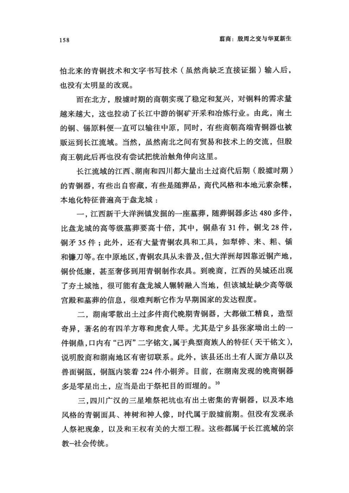
原书阅读器页 173原书物理 PDF 页 171印刷页 159
9 张煜珧已经注意到，夏商时期的山川祭祀存在“南方用器、北方用牲”的差别。张煜珧：《夏商周祭祀遗存研究》，西北大学2019年博士论文。不过这种差异开端的时间更早，它们也不一定只是对山川的祭祀。
10 张煜珧：《夏商周祭祀遗存研究》。
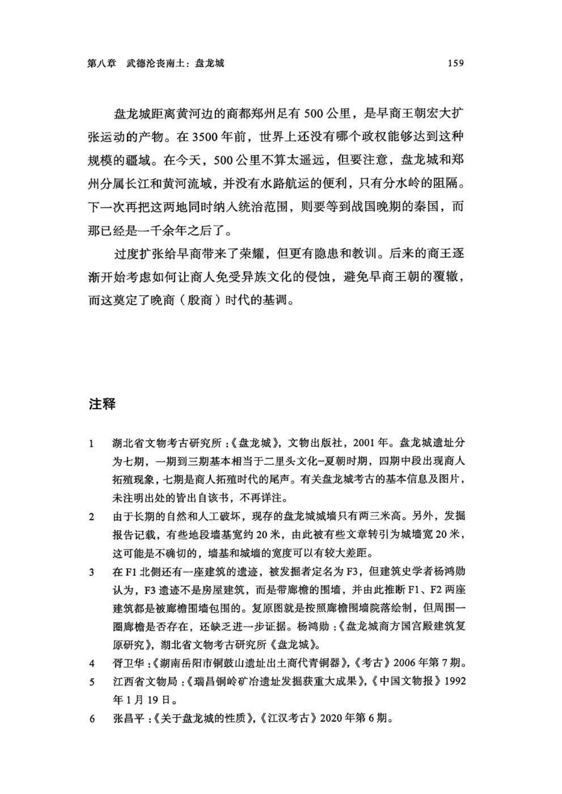
原书阅读器页 174原书物理 PDF 页 172印刷页 160
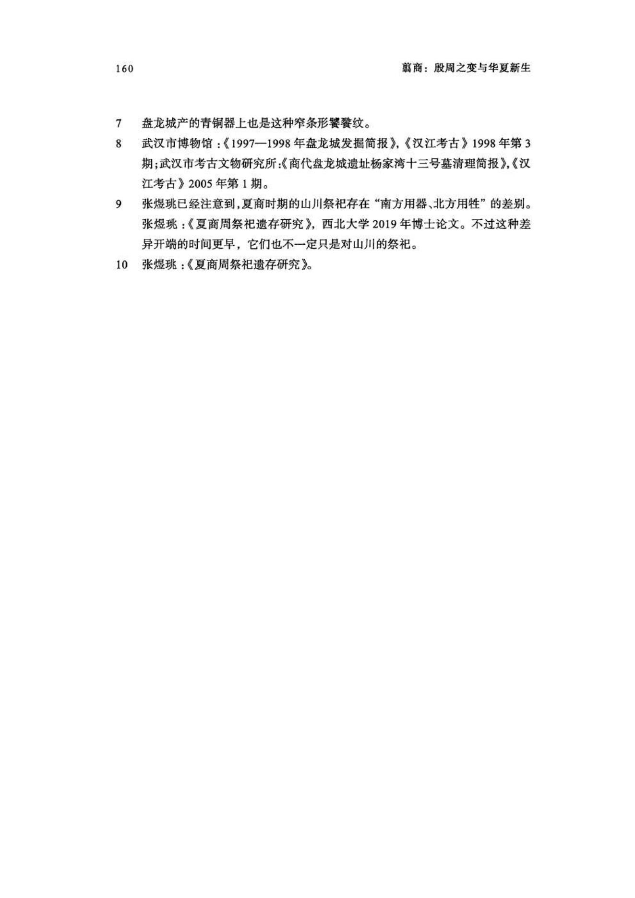
编辑札记
标记
先在正文中选择文字，再输入拼音；可用“拼音；简注”。